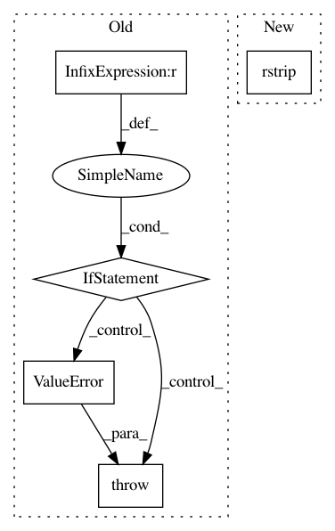

66a06524eba0b22d14204baeb2ca6d4c9db7d1d0,scripts/semantic_types.py,,convert_coq_to_nltk_type,#Any#,245
Before Change
type_ids.append("t")
elif type_item.startswith("Event"):
type_ids.append("v")
elif type_item != "->":
raise(ValueError("Invalid type name: %s in %s" % (type_item, coq_type)))
assert len(type_ids) > 0
if len(type_ids) == 1:
nltk_type_str = type_ids[0]
else:
After Change
assert parameter == "Parameter" and colon == ":"
// This list contains something like ["Entity", "->", "Prop", "->", "Prop"...]
type_sig = coq_type_list[3:]
nltk_type_str = " ".join(type_sig).rstrip(".").replace(
"->", " ").replace(
"Entity", "e").replace(
"Prop", "t").replace(
In pattern: SUPERPATTERN
Frequency: 3
Non-data size: 5
Instances
Project Name: mynlp/ccg2lambda
Commit Name: 66a06524eba0b22d14204baeb2ca6d4c9db7d1d0
Time: 2017-05-12
Author: pascual@nii.ac.jp
File Name: scripts/semantic_types.py
Class Name:
Method Name: convert_coq_to_nltk_type
Project Name: vatlab/SoS
Commit Name: b72e0df77218fb3e8cb938fe344c3412ccb65bd4
Time: 2016-12-16
Author: ben.bog@gmail.com
File Name: sos/actions.py
Class Name:
Method Name: report
Project Name: vatlab/SoS
Commit Name: 7cdb2074318a449647168fb087f2f2a775164863
Time: 2016-12-16
Author: ben.bog@gmail.com
File Name: sos/actions.py
Class Name:
Method Name: report